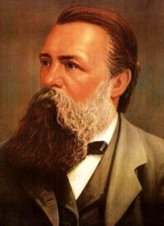

Немецкий философ, политический теоретик.
Энгельс был ключевой фигурой в развитии социализма и коммунизма.
В его трудах изложено видение общества, возглавляемого рабочими,
основанного на сотрудничестве и самоуправлении, а не на репрессивном контроле капитала.
Он является одной из самых влиятельных фигур в современной истории.
Соавтор сочинений «Коммунистический манифест» и «Капитал».
Почти до конца жизни занимался составлением пока не опубликованных томов «Капитала»,
переиздавал первый том, написал целый ряд крупных сочинений,
последним из которых стал опубликованный в 1884 г. «Крестьянский вопрос во Франции и Германии».